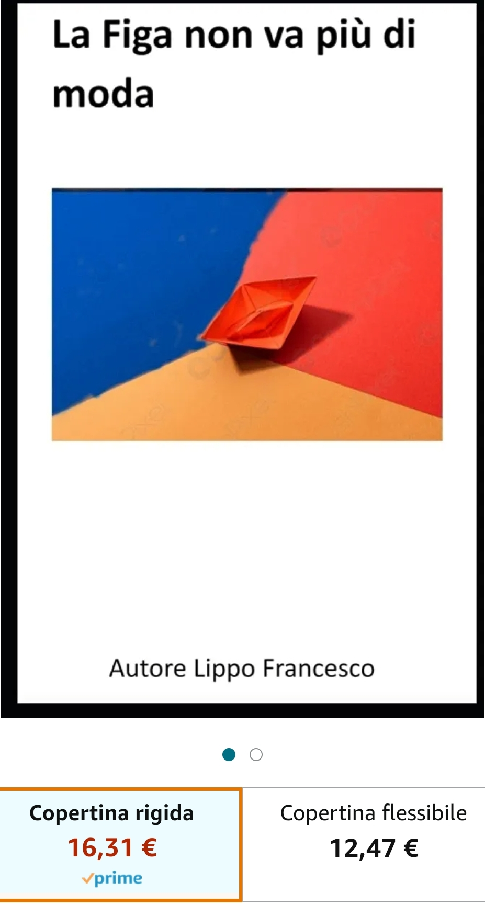

Benvenuti nel blog di Lippo Francesco, un luogo dedicato alla scoperta dei miei romanzi avvincenti. Il mio primo romanzo, intitolato 'La Figa non Va più di moda', racconta le straordinarie avventure di Gianna, una giovane donna di Torino. Gianna attraversa un percorso di scoperta dell'amore in tutte le sue forme e deve affrontare le sfide e le delusioni della vita. Tuttavia, tutto cambia quando incontra Raffaele, un incontro che trasformerà radicalmente il suo destino. Seguite Gianna in questa storia emozionante che esplora le profondità dell'animo umano e le inaspettate svolte della vita.
